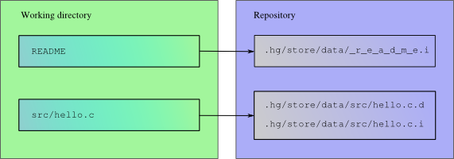

Mercurial
Software Patterns
Assignment 2
Group 4
Version 3
Introduction
The document presents the pattern-based recovery and evaluation of the architecture of an open-source system, Mercurial. It is a distributed version control system. This document gives an overview of the patterns that represent the core of the Mercurial system. We use the IDAPO for identifying the architectural patterns in Open source software. We also discuss about the specific variants of the patterns which we chose. Furthermore we need to evaluate the found patterns using Pattern-Based Architectural Review method. the evaluation of the consequences of patterns is based on the system’s quality attributes.
The structure of the document is as follows:
Section [2] describes the system context of Mercurial version control system. Section [3] deals with identifying the stakeholders and their concerns as well as the key drivers which should drive the development of the system.
Section [4] describes the various architectural views for the system and also the architectural patterns identified for the Mercurial system using IDAPO. It also discusses how the various patterns are related with each other and the impact of each pattern on the system architecture and also discusses about the variants used. It also includes the decomposition of the patterns, responsibilities of each component in the patterns and also about the interfaces.
Section [5] is mainly focused on the architectural evaluation of the Mercurial system using PBAR approach. It also shows how each quality attribute identified are addressed.
System context (5%)
Mercurial[a] is a distributed revision control system. It aims to help developers manage changes (revisions) made to projects. Managing multiple versions of even a single document by hand is an error-prone, time-consuming task. Mercurial allows a team of developers to manage large numbers of documents with many versions. Although mercurial can maintain a version history for arbitrary files and directories, it is designed in particular to deal well with large numbers of complex text documents such as source code. There are several ways in which mercurial helps address the problems arising from collaborating on such code.
Mercurial’s functionality
Firstly, Mercurial maintains a log: an annotated history of changes. In addition to keeping track of the documents themselves, mercurial allows developers to keep track of which lines were changed, the date the changes were made, the identity of the author, and, importantly, the motivation for these changes. This is achieved by splitting changes into cohesive chunks call changesets. When a developer commits a changeset, he adds it to Mercurial’s repository of changesets, and includes a commit message describing what was changed and why. Changesets with commit messages are common in revision control systems; they allow developers to maintain systems that are too large or too old by reducing the need to grasp the entirety of the system at once.
Mercurial assists collaboration by allowing concurrent edits. When several people simultaneously change a set of files, their changes need to be merged into a final version. Revision control systems such as mercurial assist the user by largely automating this process: if only one author changes a file, his version simply replaces the old one. When multiple authors change a file in a format mercurial understands (such as plain text), changes to non-overlapping regions are automatically merged. Finally, where changes do conflict, they are reported, and the user can systematically compare the changes to resolve the conflict. Automatic merging and conflict detection helps allow multiple developers work on the same project by avoiding the friction of each developer keeping abreast of all changes.
Mercurial allows distributed development teams by allowing any developer to pull others’ changes or push his own to an external repository. Crucially, there is no technical need for a central repository nor for “one true” history, allowing for truly distributed development. In particular, each committed changeset is uniquely identifiable, allowing mercurial to avoid applying changes it has already seen, even if those changes depend on each other in non-trivial ways. Mercurial’s logged history is conceptually a directed acyclic graph. Thus when two versions are merged that (partially) share the same history, the shared part of the history is not duplicated.
These three features enable many useful scenarios. For instance, in a large system, development mistakes are made. Since it maintains a history of changes and the details of each changes, mercurial can revert a particular change e.g. to correct a mistake. Unlike a strictly linear process, such a reverted change does not require the user to redo all subsequent changes; instead, the reverted change is itself a new changeset that can be merged anywhere into the version history.
Business model: System context, Architectural relevant business parameters.
Show system context and OSS community.
Stakeholders and concerns (10%)
Stakeholders and concerns
- End user
- The end user (software developer) can be a large team of people as well as one person.
- Mercurial project leader
- Mercurial software developer
- There is currently one full-time developer working on Mercurial and several additional developers who are actively in charge of different sections and/or submit code regularly
- Patch/extension developer
- Mercurial welcomes patches and extensions from any software developer.
| Stakeholder | Concerns | Concern priority | Stakeholder priority |
|---|---|---|---|
| End user |
|
||
| Mercurial project leader |
|
||
| Mercurial software developer |
|
||
| Patch/ extension developers |
|
Key drivers
The key drivers are identified from Mercurial documentation. These key drivers are talked about extensively in several Mercurial sources. http://mercurial.selenic.com/about/
- Usability:
- The basic interface of Mercurial is easy to use, easy to learn and hard to break. Mercurial sports a consistent command set and potentially dangerous actions are available via extensions which need to be enabled.
- Scalability/Extensibility:
- The functionality of Mercurial can be increased with extensions, either by activating the official ones which are shipped with Mercurial or downloading some from the wiki or by writing our own.
- Portability:
- Mercurial is written with platform independence in mind. Binary releases are available on all major platforms.
- Performance:
- Mercurial is designed to be fast. One can generate diffs between revisions, or jump back in time within seconds.
- Reliability:
- Mercurial is truly a distributed system, which gives each developer a local copy of the entire development history. This way it works independent of network access or a central server.
Architecture (30%)
Show the individual patterns, their variants and how they integrate in the entire architecture; show at most 2 views.
The general overview of Mercurial architecture is depicted below.

Architectural views
Logical view
The logical view for the Mercurial describes the functionality of the Mercurial system to the end-users. Mercurial is a modern distributed version control system(VCS) which is written in Python. The main advantage of distributed VCS is that it allows developers to push around and intergrate changes as the project requires at each point of time. The logical view of the Mercurial can be briefly discussed as follows: The Mercurial architecture consists of a large number of modules.Each module has its own repository. The user can clone the repository to code the module. The end user can use several clones. Modules have their own unit tests. So code tests have to pass (i.e. yield only successes) before the user repositories to be pushed into the files. A build server then tests again each push, because problems may appear (e.g. platform-compatibility, or missing files). When a module is ready, it is pushed into the testing repository. In this repository, the QA tests the modules. Developers may code in this repository (mainly to fix bugs), but they should not add new features to the code. If the test is successful then the user releases it by pushing it into the stable repository.
Development view
The development view for the Mercurail deals mainly with the software development and management. We can also find few bits in C because they are critical to the performance of the system. A Python module correspoonds to a single file of code. Modules are the basic organizers for the source code. Mercurial contains a package known as _init_.py which exposes all modules and packages to the Python importer. It also has two default packages called the 'mercurial' and 'hgext'. The 'mercurial'package contains the core code required to run Mercurial whereas 'hgext' contains a lrage number of extensions. Mercurial can be basically categorized as a Command-line application. One of the powerful features of Mercurial is the ability to write the extensions. It is quite simple and easy to extend Mercurial beacuse of Python. other feature of Mercurial is 'Hooks'which provide a way to the VCS events to interact with the outside world. There are two variants of hooks one is the traditional hook which invokes scripts in the shell. The other one is the Python hook which invokes Python module and a function name to call from that module. In Mercurial, hooks are divided into four types:
- pre-command
- post-command
- controlling
- miscellaneous
Process view
The process view of Mercurial depicts the interaction of processes or objects in runtime. When Mercurial tracks modifications to a file, it stores the history of that file in a metadata object called a 'filelog'. Mercurial uses a structure called a 'manifest' to collect together information about the files that it tracks. Each entry in the manifest contains information about the files present in a single changeset. The changelog contains information about each changeset. Within a changelog, a manifest, or a filelog, each revision stores a pointer to its immediate parent (or to its two parents, if it's a merge revision). For every changeset in a repository, there is exactly one revision stored in the changelog. Each revision of the changelog contains a pointer to a single revision of the manifest. A revision of the manifest stores a pointer to a single revision of each filelog tracked when that changeset was created. The underpinnings of changelogs, manifests, and filelogs are provided by a single structure called the revlog. Mercurial only ever appends data to the end of a revlog file. Mercurial treats every write as part of a transaction that can span a number of files. A transaction is atomic: either the entire transaction succeeds and its effects are all visible to readers in one go, or the whole thing is undone. This guarantee of atomicity means that if user is running two copies of Mercurial, where one is reading data and one is writing it, the reader will never see a partially written result that might confuse it. In the working directory, Mercurial stores a snapshot of the files from the repository as of a particular changeset. When user updates the working directory to contain a particular changeset, Mercurial looks up the appropriate revision of the manifest to find out which files it was tracking at the time that changeset was committed, and which revision of each file was then current. It then recreates a copy of each of those files, with the same contents it had when the changeset was committed.
Physical view
The physical view depicts the system concerned with the topology of software components. Since Mercurial can be seen as peer-to-peer application, each peer has the same structure as the other. Each peer represents a node which contains some layers. In general, no layer should know the details of any layer above it, and no layer should abuse the interface of layers below it. Interface layer is the topmost layer and is the part most directly exposed to the user. It contains commands.py, an implementation of the command line interface which contains most of the code that deals with converting commands into simple repository operations as well as the stdio push/pull interface, and hgweb.py, an implementation of the web interface which contains all the web and templating logic as well as the web based push/pull interface. The second one, Repository layer contains all the objects that implement the core primitives of the SCM such as commit, checkout/update/merge, push/pull, add/remove/copy, verify, and the proxy objects for remote repositories (remoterepository, sshrepository, httprepository, httpsrepository, statichttprepository) and the objects from which the repository is constructed (filelog, manifest, changeset, dirstate). The third one, Storage layer contains the basis for version storage, revlog. The fourth one, UI layer provides generic methods for communicating with the user and managing configuration info. The fifth layer, Utility layer includes generic functionality and platform abstraction.
Candidate Architectural Patterns
- Proxy
- For accessing remote repositories from a local client. Accepted, Sunna
- Layers
- The levels of abstraction. Rejected, not important enough to be considered architectural
- Peer-to-peer
- Mercurial itself implements such a system between repositories - but is this a real architectural pattern or just the way its set up? Accepted, Sunna
- Shared Datastore
- aka Shared Repository; renamed to avoid confusion with the term repository to meaning a Mercurial SCM repository. The disk revlogs are shared between various other components and could be seen as a shared repository. Accepted, Eamon
- Indirection layer
- The revlog storage can be seen as an indirection layer over the filesystem: direct access is problematic due to performance, corruption and locking. Rejected, Shared datastore is a better match
- Active repository
- Active repository: the mercurial VCS itself can be seen as an active repository in that it provides hooks that can actively notify others of changes. Is this more like a feature than a pattern? It's also not major. Accepted, Divya
- Client-Server
- A mercurial repository communicates via a client-server protocol when over the network e.g. when pushing or pulling. Accepted, Assel
Architectural patterns
Peer-to-peer
| Pattern Section | Comments |
|---|---|
| Name | Peer-to-peer |
| Problem Context | |
| Solution Variant | |
| Rationale | |
| Consequences | |
| Related patterns | Shared repository |
Shared repository

| Pattern Section | Comments |
|---|---|
| Name | Shared repository |
| Problem Context | |
| Solution Variant | |
| Rationale | Scalability/Extensibility |
| Consequences | |
| Related patterns | Peer-to-peer |
Client server
| Pattern Section | Comments |
|---|---|
| Name | Client server |
| Problem Context | Two independent from each other components/peers need to communicate with each other, even running in different computers (Mercurial is distributed system). One of the peers initiate communication by sending request to other peers. It must be cope with multiple process at the same time. |
| Solution Variant | The CLIENT-SERVER pattern consists of two kinds of components: clients and servers. Both of them implement collective tasks: transaction and system management. The CLIENT-SERVER pattern builds complex system architectures by introducing multiple client-server relationships: a server can act itself as a client to other servers. The Client tier responsibles for the presentation of data, controlling users’ interface; It can be multiple users browsers. Whole data stores into backend tier Backend tier stores the data . |
| Rationale | |
| Consequences | |
| Related patterns | Broker |
Decomposition, component responsibilities & interfaces
Evaluation & recommendations (35%)
Follow PBAR to evaluate the quality attributes based on the patterns.
Emphasize on recommendations on how to improve the system.